京都府
Kyoto Prefecture
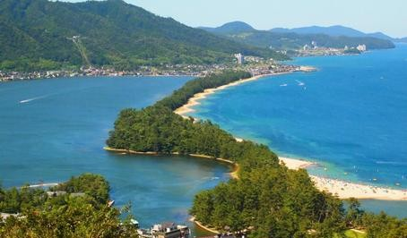

天橋立に舞う鶴
風景：日本三景の一つ、天橋立の松並木を眼下に、空を舞う一羽の鶴。
解説：伝統的な「松に鶴」を、京都府北部の象徴である天橋立で再現。海の青と松の緑、鶴の白が新年の始まりを祝う、最高格の一枚です。
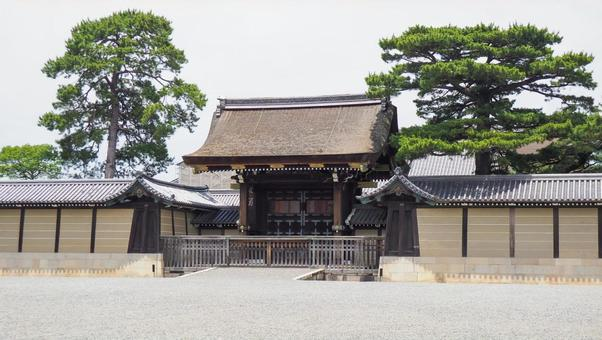
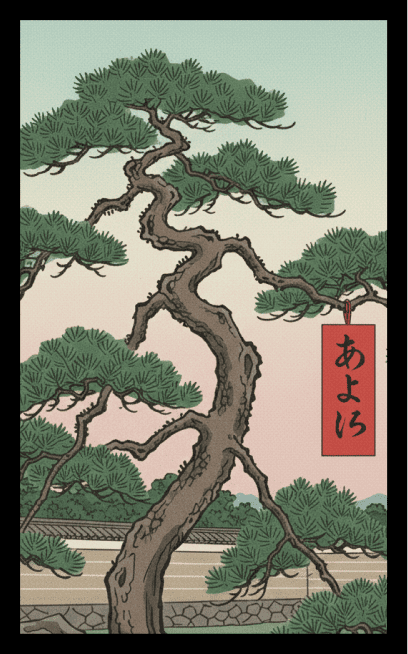
御所の松に赤短
風景：京都御所（あるいは二条城）の美しく整えられた名松。
解説：皇室の歴史を感じさせる気品ある松に、「あかよろし（明らかに素晴らしい）」の赤短を添え、千年の都・京都の雅を表現します。
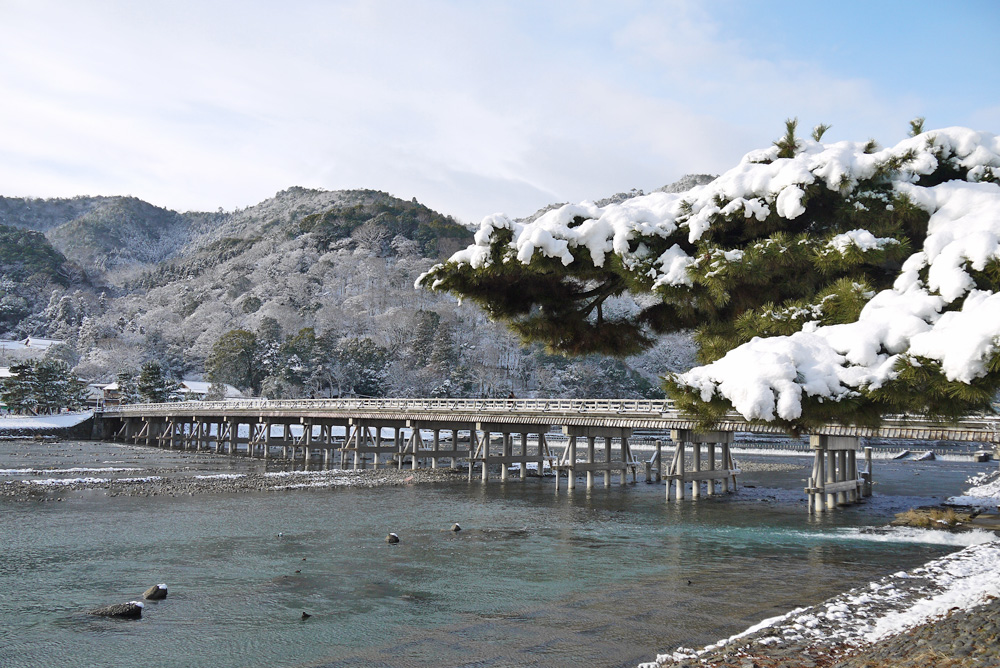
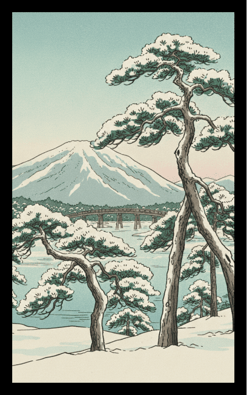
嵐山の雪化粧した松
風景：渡月橋付近や嵐山の山肌に立つ、雪を被った松。
解説：墨絵のような冬の嵐山を描き、京都の厳しい寒さとその中にある静寂の美しさを表現します。
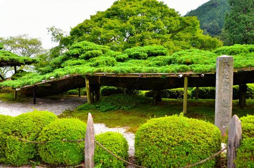
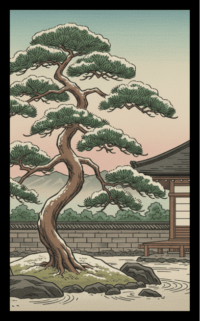
寺院の庭園にある名木「一本松」
風景：善峯寺の「遊龍の松」や金閣寺の「陸舟の松」をイメージした、見事な枝ぶりの一本松。
解説：京都の寺院文化に欠かせない、庭師の技が光る造形美としての松を切り取ります。
1月
絵札を押すと
詳細が見れるぞ
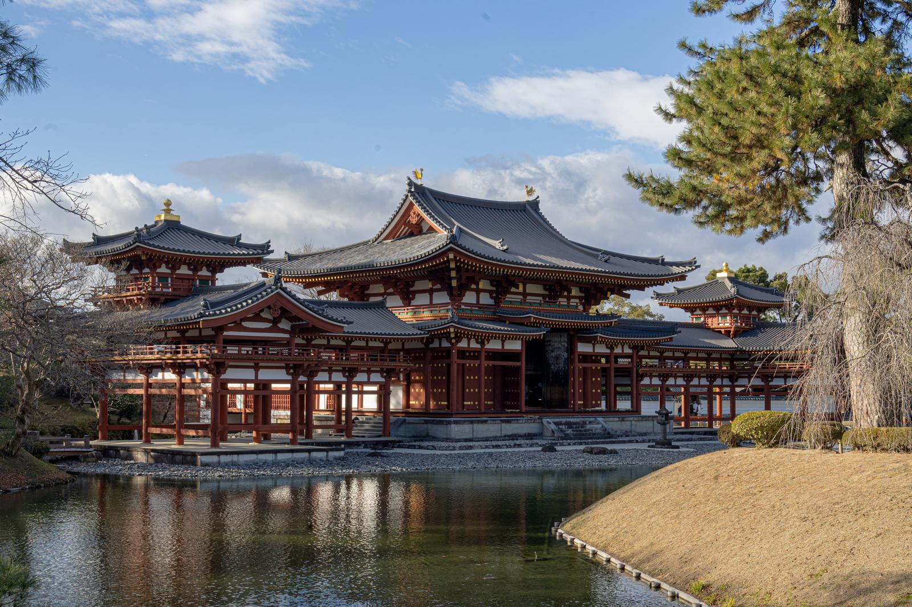

平等院の藤にホトトギス
風景：宇治・平等院鳳凰堂を背景に、長く垂れ下がった藤の花と、その間を飛ぶホトトギス。
解説：10円玉のデザインでも有名な鳳凰堂と、藤の名所である宇治を組み合わせ。平安貴族が愛した色彩豊かな春を表現します。
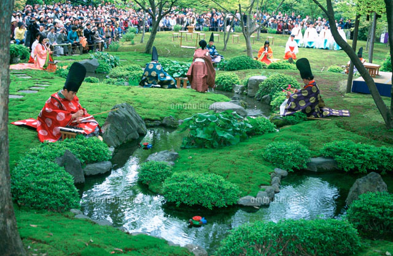
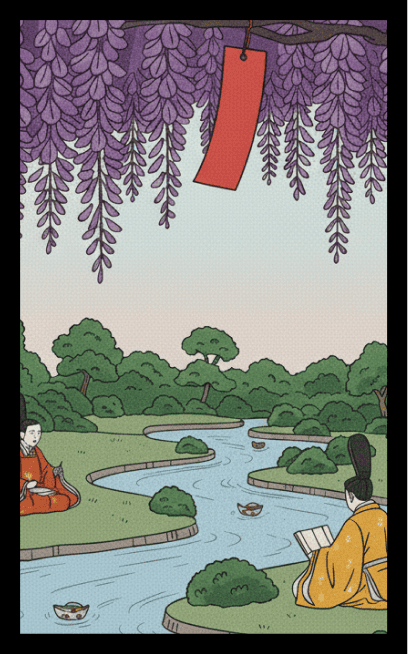
城南宮の藤に短冊
風景：「曲水の宴」で知られる城南宮の、降り注ぐような藤棚。
解説：源氏物語ゆかりの地。神苑に咲き誇る藤に短冊を添え、古典文学の世界へ誘うような優雅さを演出します。
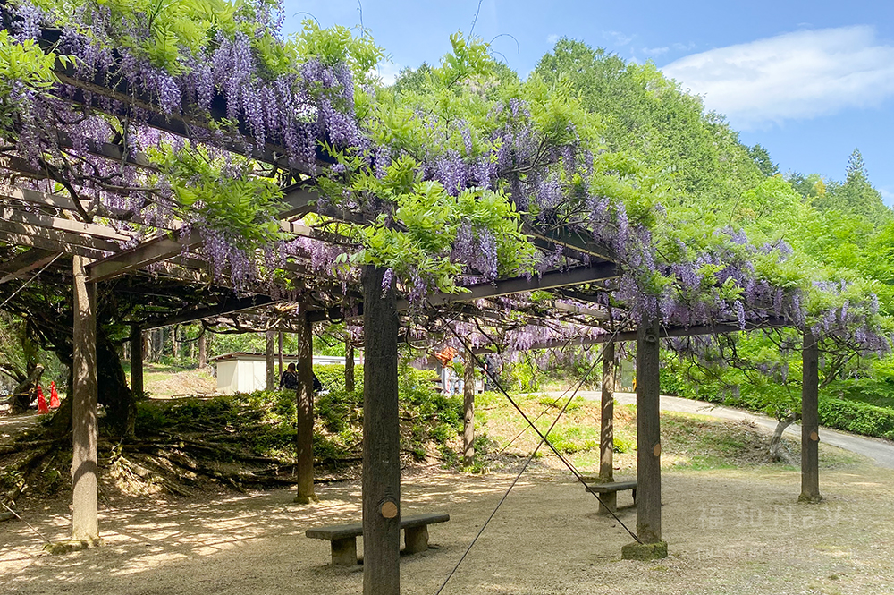
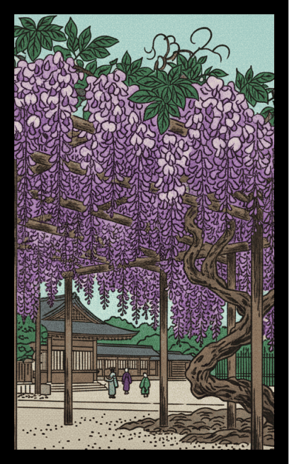
才ノ神の藤
風景：福知山市にある推定樹齢2000年の巨大な自然の藤。
解説：市街地の洗練された藤とは対照的な、京都府北部の力強く野生的な藤の生命力を表現します。
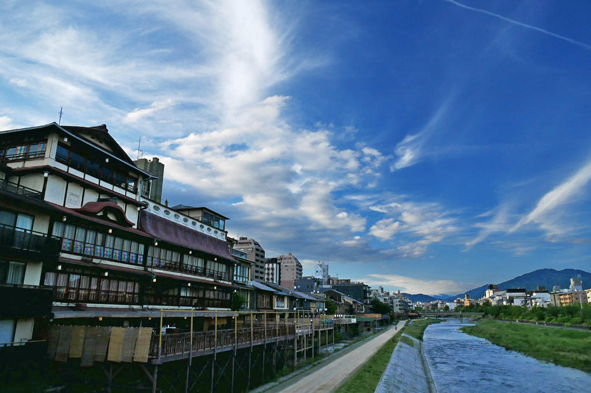
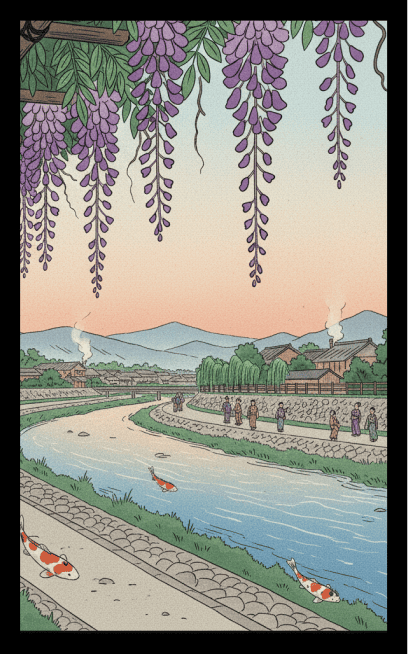
鴨川沿いの藤
風景：春の鴨川の等間隔に並ぶカップルや散策路の傍らに咲く藤。
解説：京都の人々の日常に溶け込む藤の風景。等間隔の川床や水面のきらめきを背景に添えます。
4月
絵札を押すと
詳細が見れるぞ